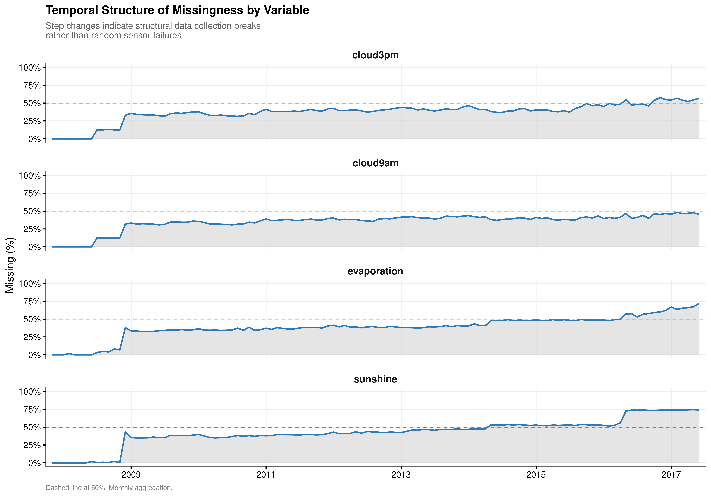
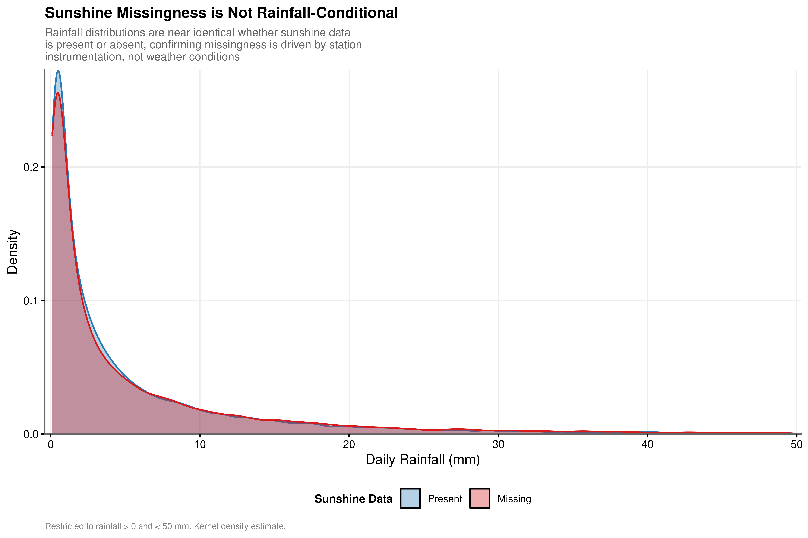

2 Data Preparation
Chapter Context. Before any statistical analysis can proceed, the raw dataset must be transformed into a form that is both analytically tractable and physically credible. This chapter documents three decisions that have downstream consequences throughout the report: the syntactic and temporal standardisation of the raw data, a diagnostic investigation of the structure and mechanism of the missingness, and the design of a two-stage imputation pipeline informed by that investigation. Each decision is motivated by the properties of the data-generating process rather than by computational convenience.
2.1 Initial Cleaning and Standardisation
The raw dataset undergoes three transformations before any missingness analysis or imputation.
Column standardisation. All variable names are converted to snake_case via janitor::clean_names(), called at ingestion. This eliminates downstream ambiguity in variable references and ensures internal consistency across all chapters.
Temporal feature extraction. The date column is typed as a Date object and two derived features are extracted: month (as a factor) and day (day of week, labelled). Month captures the seasonal structure of Australian precipitation; day of week is retained as a potential control variable for reporting artefacts in the raw data.
Target filtering. Observations where rainfall is missing are removed. Records without a ground-truth rainfall measurement have no supervised learning value and cannot contribute to either the hurdle or the intensity component of the ZIG model.
2.2 Missingness Diagnostics
Before designing an imputation strategy, it is necessary to understand the mechanism and structure of the missing data. The choice between imputation methods depends critically on three questions: whether missingness is random with respect to other variables in the dataset, whether missing values cluster at specific locations or time periods, and whether the four most-affected variables fail independently or as a coordinated group. A strategy designed without answering these questions risks either under-imputing (discarding recoverable signal) or over-imputing (fabricating data in regions where recovery is not possible). The five analyses below provide the empirical basis for each design decision in the pipeline that follows.
2.2.1 Co-missingness Structure
#> High missingness variables: sunshine, evaporation, cloud3pm, cloud9am| Variable 1 (Missing) | Variable 2 | Co-missing (%) |
|---|---|---|
| evaporation | sunshine | 93.2 |
| cloud9am | cloud3pm | 92.6 |
| cloud3pm | cloud9am | 87.2 |
| cloud9am | sunshine | 84.3 |
| sunshine | evaporation | 83.8 |
| cloud3pm | sunshine | 82.5 |
| cloud9am | evaporation | 81.4 |
| cloud3pm | evaporation | 78.0 |
| evaporation | cloud3pm | 73.7 |
| evaporation | cloud9am | 72.5 |
| sunshine | cloud3pm | 70.1 |
| sunshine | cloud9am | 67.5 |
The co-missingness matrix (Table 2.1) confirms that the four variables fail as a systematic cluster rather than independently. The dependencies are strongest between instrumental pairs: when evaporation is missing, the conditional probability that sunshine is also missing is 93.2%. Even the weakest relationship in the matrix, sunshine missing given cloud9am missing, retains a rate of 67.5%, which is nearly double what would be expected under random failure.
Under MCAR, co-missing rates would approximate the marginal missingness rate of each variable, roughly 40 to 48%. Rates uniformly between 67.5% and 93.2% indicate a shared upstream cause: the instrumentation profile of each station. Sunshine recorders, evaporation pans, and cloud coverage sensors are deployed as a package, not individually. A station without one is very likely to lack the others. This constitutes MNAR at the station level. The practical consequence for imputation is that treating the four variables as independently missing would be incorrect: their correlations when observed arise precisely because they fail together, and a multivariate imputation method that exploits those cross-variable relationships will outperform four separate univariate models.
2.2.2 Temporal Structure and Structural Breaks

The temporal analysis (Figure 2.1) confirms that missingness is not randomly distributed over time. The cloud cover variables maintain a roughly stable and high missingness rate across the observation window, consistent with a fixed set of stations that never recorded these measurements. The sunshine and evaporation variables show a distinct stepped pattern: missingness rises at specific breakpoints rather than fluctuating randomly, indicating that certain stations were decommissioned or that recording protocols changed at identifiable calendar dates.
This temporal structure has a direct implication for the interpolation stage of the pipeline. Linear interpolation is appropriate when a smooth trajectory can be inferred from values on either side of a gap. Extended contiguous gaps produced by a structural break have no valid upper boundary from which to interpolate, and filling them with temporal interpolation would create long synthetic sequences with no empirical anchor. The five-day interpolation cap set in Stage 1 of the pipeline is a direct response to this finding.
2.2.3 Geographic Concentration: Ghost Sensor Identification
#>
#> Total ghost sensor instances identified: 60 across 22 locationsThe location-level analysis (Table 2.2) identifies 60 ghost sensor instances across 22 locations. At each of these station-variable pairs, the instrument recorded a value on zero days (or fewer than 5% of days) across the entire observation window. These are not sensors experiencing intermittent failure; they are sensors that were never present or that were removed before the data collection period began.
The distinction between ghost sensors and ordinary missingness is consequential for imputation. For a gap of five to fifteen consecutive missing days, a Random Forest model can generate reasonable predictions by drawing on correlated variables at the same station and the same variable at nearby stations. For a gap spanning 3,000 or more consecutive observations, this extrapolation has no empirical support: there is no observed value at that station-variable combination to anchor or validate the prediction. Values produced for these pairs would be statistically plausible by construction but would carry no physical information about what the instrument would have actually recorded. Ghost sensor pairs are identified before Stage 2 runs and flagged so that their imputed values can be treated with appropriate scepticism in downstream analysis.
2.2.4 Weather-Conditionality of Sunshine Missingness
| Day Type | Observations (n) | Sunshine Missing (%) |
|---|---|---|
| Dry (<=1mm) | 110319 | 47.8 |
| Rainy (>1mm) | 31880 | 47.2 |

A specific concern when imputing a predictor variable is outcome-related missingness: if sunshine sensors failed more often on rainy days, the imputed values would carry a directional signal about the target variable and could introduce bias into the training data.
The empirical test refutes this concern. Table 2.3 reports a sunshine missing rate of 47.8% on 110,319 dry days and 47.2% on 31,880 rainy days, a difference of 0.6 percentage points. Figure 2.2 confirms this visually: the distribution of rainfall amounts on days with missing sunshine and on days with present sunshine are indistinguishable across the full range from 0 to 50 mm. The slight visual offset in the figure reflects the difference in group sizes rather than a systematic pattern.
Sunshine missingness is station-conditional rather than weather-conditional. The same stations record missing sunshine on both dry and rainy days at nearly identical rates because the instrument is absent from those stations entirely. This finding clears the imputation path: there is no outcome-related confound to correct for.
2.2.5 Missing Pattern Structure
| Variables Missing (of 4) | Observations (n) | Percentage (%) |
|---|---|---|
| 0 | 62566 | 43.012512 |
| 1 | 10525 | 7.235666 |
| 2 | 20376 | 14.007975 |
| 3 | 11378 | 7.822082 |
| 4 | 40615 | 27.921765 |
Table 2.4 reveals a strongly bimodal structure across five distinct patterns. Of all observations: 62,566 (43.0%) have none of the four variables missing; 10,525 (7.2%) have exactly one missing; 20,376 (14.0%) have exactly two missing; 11,378 (7.8%) have exactly three missing; and 40,615 (27.9%) have all four missing simultaneously. The two endpoint categories, zero missing and all four missing, together account for 70.9% of all observations.
The 27.9% with complete simultaneous missingness corresponds directly to the ghost sensor stations identified in Section 2.2.3. For these observations, no imputation is supportable and the values remain missing after the pipeline runs. The 43.0% with no missingness require no intervention. The substantive imputation work is concentrated in the remaining 29.1% across the three intermediate patterns, where partial instrumentation means that correlated predictors are available to inform the Random Forest estimates. The bimodal structure also confirms that the co-missingness finding is not a statistical artefact: observations genuinely tend to be either fully instrumented or minimally instrumented, not randomly partially instrumented.
2.3 Imputation Pipeline
The diagnostic evidence from Section 2.2 motivates each design decision in the imputation pipeline. Missingness is station-level rather than weather-conditional (Section 2.2.4), temporally structured with extended contiguous gaps rather than random scatter (Section 2.2.2), and co-located across variables at the station level (Section 2.2.1). These properties rule out simple listwise deletion and mean imputation. They call for a pipeline that respects temporal continuity for smoothly-evolving variables, exploits cross-variable correlations for the structured variables, and declines to impute where the data is genuinely unrecoverable.
2.3.1 Stage 1: Temporal Interpolation
The eight variables with smooth day-to-day trajectories, minimum and maximum temperature, morning and afternoon temperature, morning and afternoon pressure, and morning and afternoon humidity are imputed via linear interpolation grouped by location, bounded by a five-day maximum gap. The five-day cap is set directly in response to the temporal structural break finding: gaps of up to five days lie within a regime where the values at both boundaries sufficiently constrain the trajectory, while longer gaps are associated with structural collection failures that interpolation cannot safely bridge.
2.3.2 Stage 2: Multivariate Imputation via Predictive Mean Matching and Random Forest
Remaining gaps in sunshine, evaporation, cloud9am, cloud3pm, and the three wind direction variables are addressed using mice with method assignments differentiated by variable type.
The four continuous atmospheric variables (sunshine, evaporation, cloud9am, cloud3pm) are imputed using predictive mean matching (PMM). PMM draws imputed values from a pool of observed donor observations whose predicted values are closest to the predicted value of the missing case, rather than using the model prediction directly. This has two practical advantages over a point-prediction method for these variables. First, PMM is constrained to return values that exist in the observed data, which enforces physical bounds without requiring explicit constraints. Second, the stochastic donor draw introduces genuine between-imputation variability, which is necessary for valid variance decomposition via Rubin’s Rules downstream. Each variable is imputed from a physically motivated predictor set:
- Cloud cover (
cloud9am,cloud3pm) from morning and afternoon humidity, morning pressure, location, and month. - Sunshine from cloud cover at both observation times, maximum temperature, afternoon humidity, location, and month.
- Evaporation from wind gust speed, maximum temperature, afternoon humidity, sunshine, location, and month.
The three wind direction variables (wind_gust_dir, wind_dir9am, wind_dir3pm) are imputed using Random Forest. Wind direction is a multi-class unordered categorical variable with sixteen compass-point levels. PMM is not appropriate for unordered factors because it imposes an implicit numeric ordering on the donor matching step. Random Forest handles the multi-class non-ordinal structure natively by splitting on class membership rather than on numeric distance. Each wind direction variable is conditioned on its temporally matched wind speed and pressure readings: gust direction from gust speed and afternoon pressure, morning direction from morning speed and morning pressure, and afternoon direction from afternoon speed and afternoon pressure. This preserves the physical coupling between concurrent wind speed and direction measurements.
The use of targeted predictor sets for all variables is motivated directly by the co-missingness finding in Section 2.2.1. Because the four atmospheric variables tend to be absent together at the station level, their cross-variable correlations when observed are strong and reliable signals for imputation. Restricting each variable’s predictor set to physically motivated covariates exploits this structure while reducing the risk of imputing on spurious correlations introduced by including variables that carry no physical relationship to the target.
2.3.3 Ghost Sensor Flagging
Before Stage 2 runs, all station-variable pairs identified in Section 2.2.3 as ghost sensors (more than 90% missing across the full observation window) are catalogued and binary missingness flags are attached to the data (sunshine_imp_flagged, evap_imp_flagged, cloud3pm_imp_flagged, cloud9am_imp_flagged). These flags serve two purposes: they are excluded from the MICE predictor matrix so they cannot contaminate the imputation model, and they remain in the final dataset as explicit markers of which values are extrapolated with no empirical anchor at the station level. The raw date column is also excluded from the predictor matrix to prevent temporal data leakage. Neither PMM nor Random Forest has empirical support for predicting values at a station where an instrument was never present; the flags make this provenance transparent for any downstream analysis that needs to account for it.
2.4 Post-Imputation Dataset Properties
The two-stage pipeline produces a dataset whose properties are each traceable to a specific finding from the diagnostic analysis in Section 2.2.
Retention without fabrication. No observations are discarded on the basis of partial missingness. The 27.9% of observations with all four target variables simultaneously absent are retained with those variables still missing, consistent with the ghost sensor finding that no empirically supportable imputation is possible for them.
Temporal coherence. The interpolated variables maintain their within-location autocorrelation structure. The five-day cap, set in response to the temporal structural break analysis in Section 2.2.2, prevents the interpolation from extending across genuine data voids. The use of rule = 1 in na.approx ensures that boundary gaps return NA rather than extrapolated values, which would fall outside the physically credible range of the variable and corrupt the donor pool used by PMM in Stage 2.
Distributional fidelity. PMM draws imputed values directly from the pool of observed donor observations rather than using a model prediction. This constrains imputed values to the observed empirical range of each variable and preserves the marginal distribution, including multi-modal structure and skew, without requiring distributional assumptions.
Physical bounds enforcement. Because PMM can only return values that exist in the observed data, imputed values for all continuous variables are guaranteed to fall within the range of the observed training set. This property eliminated the out-of-range predictions that arose when rule = 2 extrapolation in Stage 1 produced boundary values below zero for sunshine, which then contaminated the PMM donor matching step.
Outcome independence. The weather-conditionality test in Section 2.2.4 confirmed that sunshine missingness does not covary with rainfall amounts. Imputed sunshine values therefore do not introduce a directional bias into the training labels for the hurdle or intensity components of the downstream model.
Wind direction coherence. Wind direction variables are imputed as unordered categorical factors using Random Forest, with each direction variable conditioned on its temporally matched speed and pressure readings. This preserves the physical coupling between concurrent wind speed and direction measurements while respecting the non-ordinal structure of compass-point categories.
Provenance transparency. Binary imputation flags for the four ghost-prone variables are retained in the final dataset. These flags enable downstream models or diagnostics to condition on or exclude observations where imputed values carry no empirical anchor at the station level, and they are used directly in the sensitivity analysis documented in the following chapter.